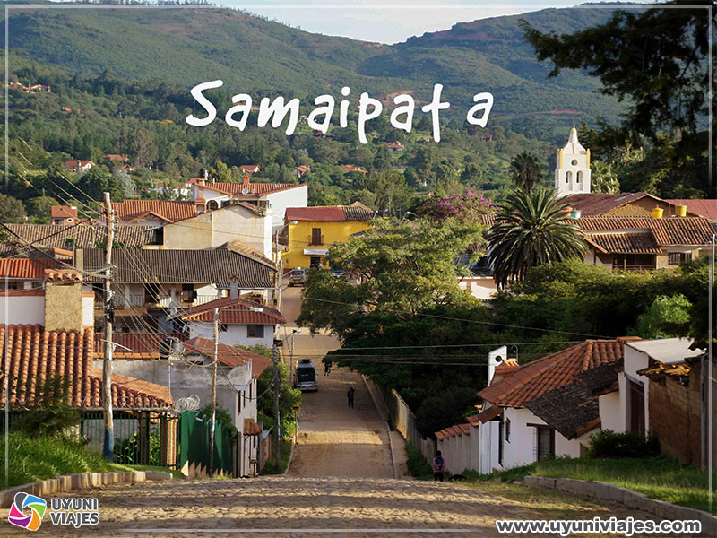

Samaipata, es un municipio y una pequeña ciudad turística de Bolivia, capital de la provincia Florida en el oeste del departamento de Santa Cruz. La localidad se encuentra distante 119 km al suroeste de la ciudad de Santa Cruz de la Sierra, la capital departamental. El municipio cuenta con una población de 10.472 habitantes (según el Censo INE 2012)

El jardin botanico, se encuentra ubicado en la carretera nacional Ruta Nacional 4, en su tramo Santa Cruz-Cotoca, en el kilómetro 8.5 al este de la ciudad de Santa Cruz de la Sierra,2 en la zona de Guapilo.1
Altitud: 375 m s. n. m.
Clima: Termo tropical pluviestacional subhúmedo, con periodo húmedo de noviembre a abril, y periodo seco de mayo a octubre.
Topografía : Terreno plano, atravesado por el arroyo Guapilo.
Vegetación : Bosque subhúmedo semideciduo de llanura con suelos moderadamente drenados
Hay que pagar una tarifa de entrada que en 2019 estaba establecida en: 10 bolivianos para adultos y 5 bolivianos para menores. El horario de atención: 9:00 a 17:00 todos los días incluyendo los feriados.

Plaza 24 de Septiembre. La Plaza fue antiguamente llamada Plaza de Armas,3 en ella se desarrollaron los enfrentamientos de la revolución liberal federal de 1898, tras la pacificación pasó a llamarse Plaza de la Concordia, actualmente recibe el nombre de la fecha del levantamiento de independencia de Santa Cruz.4En la plaza se encuentra la estatua de Ignacio Warnes.5Posteriormente fue renombrada como Plaza 24 de septiembre en honor a los movimientos independentistas de 1810.